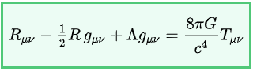

Vacuum Solutions to Einstein’s Field Equations¶
Einstein’s Equation¶
Einstein’s Field Equation(EFE) is a ten component tensor equation which relates local space-time curvature with local energy and momentum. In short, they determine the metric tensor of a spacetime given arrangement of stress-energy in space-time. The EFE is given by
Here, \(R_{\mu\nu}\) is the Ricci Tensor, \(R\) is the curvature scalar(contraction of Ricci Tensor), \(g_{\mu\nu}\) is the metric tensor, \(\Lambda\) is the cosmological constant and lastly, \(T_{\mu\nu}\) is the stress-energy tensor. All the other variables hold their usual meaning.
Metric Tensor¶
The metric tensor gives us the differential length element for each durection of space. Small distance in a N-dimensional space is given by :
\(ds^2 = g_{ij}dx_{i}dx_{j}\)
The tensor is constructed when each \(g_{ij}\) is put in it’s position in a rank-2 tensor. For example, metric tensor in a spherical coordinate system is given by:
\(g_{00} = 1\)
\(g_{11} = r^2\)
\(g_{22} = r^2sin^2\theta\)
\(g_{ij} = 0\) when \(i{\neq}j\)
We can see the off-diagonal component of the metric to be equal to 0 as it is an orthogonal coordinate system, i.e. all the axis are perpendicular to each other. However it is not always the case. For example, a euclidean space defined by vectors i, j and j+k is a flat space but the metric tensor would surely contain off-diagonal components.
Notion of Curved Space¶
Imagine a bug travelling across a 2-D paper folded into a cone. The bug can’t see up and down, so he lives in a 2d world, but still he can experience the curvature, as after a long journey, he would come back at the position where he started. For him space is not infinite.
Mathematically, curvature of a space is given by Riemann Curvature Tensor, whose contraction is Ricii Tensor, and taking its trace yields a scalar called Ricci Scalar or Curvature Scalar.
Straight lines in Curved Space¶
Imagine driving a car on a hilly terrain keeping the steering absolutely straight. The trajectory followed by the car, gives us the notion of geodesics. Geodesics are like straight lines in higher dimensional(maybe curved) space.
Mathematically, geodesics are calculated by solving set of differential equation for each space(time) component using the equation:
\(\ddot{x}_i+0.5*g^{im}*(\partial_{l}g_{mk}+\partial_{k}g_{ml}-\partial_{m}g_{kl})\dot{x}_k\dot{x}_l = 0\)
which can be re-written as
\(\ddot{x}_i+\Gamma_{kl}^i \dot{x}_k\dot{x}_l = 0\)
where \(\Gamma\) is Christoffel symbol of the second kind.
Christoffel symbols can be encapsulated in a rank-3 tensor which is symmetric over it’s lower indices. Coming back to Riemann Curvature Tensor, which is derived from Christoffel symbols using the equation
\(R_{abc}^i=\partial_b\Gamma_{ca}^i-\partial_c\Gamma_{ba}^i+\Gamma_{bm}^i\Gamma_{ca}^m-\Gamma_{cm}^i\Gamma_{ba}^m\)
Of course, Einstein’s indicial notation applies everywhere.
Contraction of Riemann Tensor gives us Ricci Tensor, on which taking trace gives Ricci or Curvature scalar. A space with no curvature has Riemann Tensor as zero.
Exact Solutions of EFE¶
Schwarzschild Metric¶
It is the first exact solution of EFE given by Karl Schwarzschild, for a limited case of single spherical non-rotating mass. The metric is given as:
\(d\tau^2 = -(1-r_s/r)dt^2+(1-r_s/r)^{-1}dr^2+r^2d\theta^2/c^2+r^2sin^2\theta d\phi^2/c^2\)
where \(r_s=2*G*M/c^2\)
and is called the Schwarzschild Radius, a point beyond where space and time flips and any object inside the radius would require speed greater than speed of light to escape singularity, where the curvature of space becomes infinite and so is the case with the tidal forces. Putting \(r=\infty\), we see that the metric transforms to a metric for a flat space defined by spherical coordinates.
\(\tau\) is the proper time, the time experienced by the particle in motion in the space-time while \(t\) is the coordinate time observed by an observer at infinity.
Using the metric in the above discussed geodesic equation gives the four-position and four-velocity of a particle for a given range of \(\tau\). The differential equations can be solved by supplying the initial positions and velocities.
Kerr Metric and Kerr-Newman Metric¶
Kerr-Newman metric is also an exact solution of EFE. It deals with spinning, charged massive body as the solution has axial symettry. A quick search on google would give the exact metric as it is quite exhaustive.
Kerr-Newman metric is the most general vacuum solution consisting of a single body at the center.
Kerr metric is a specific case of Kerr-Newman where charge on the body \(Q=0\). Schwarzschild metric can be derived from Kerr-Newman solution by putting charge and spin as zero \(Q=0\), \(a=0\).